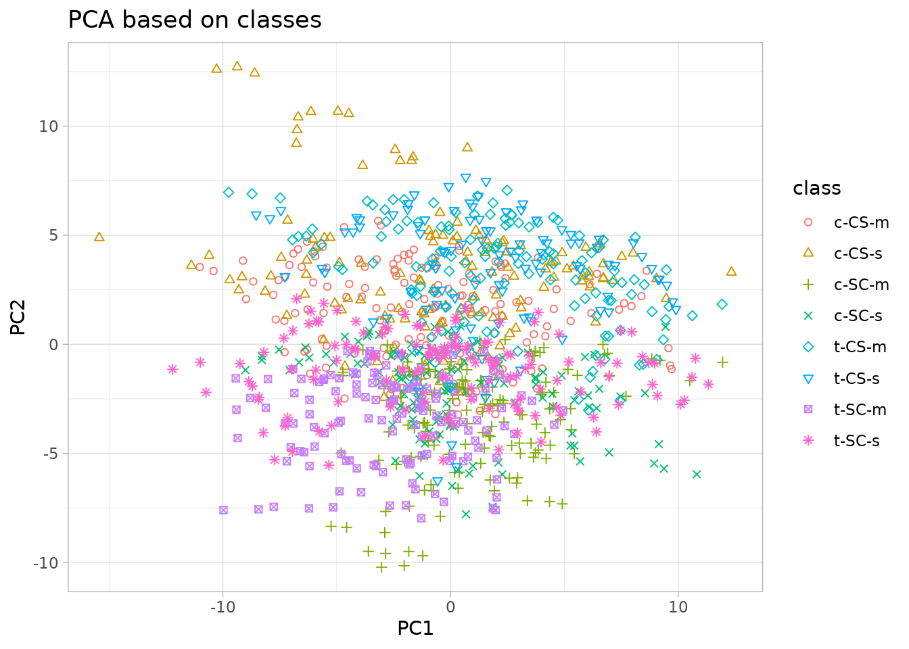
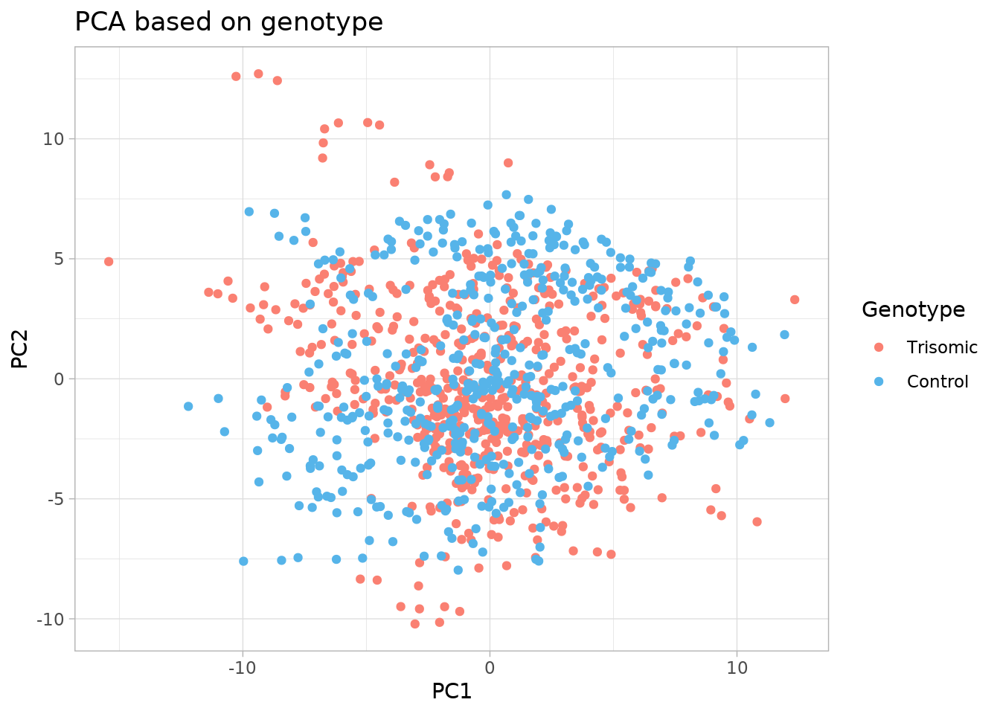
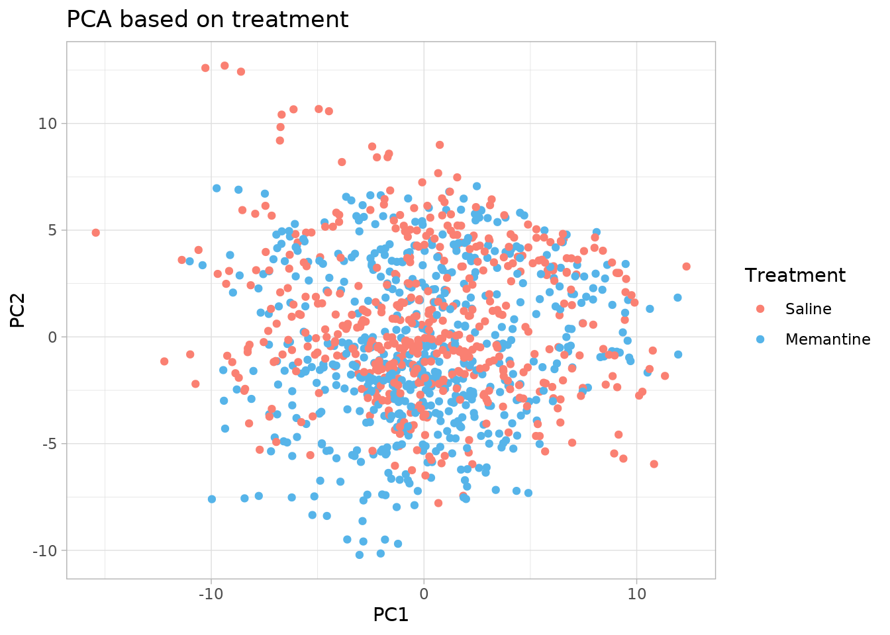
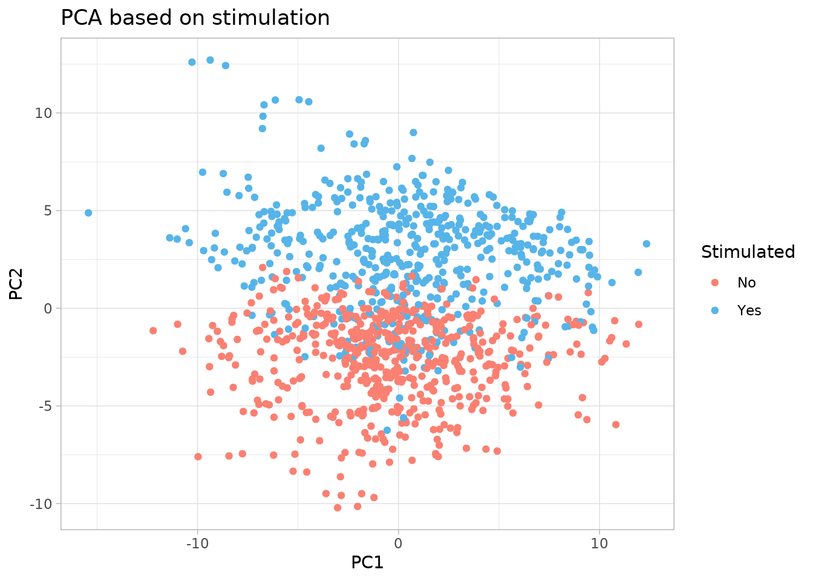

library("tidyverse")
library("broom")09_analysis_5
In this analysis we will implement PCA, since our dataset is quite large, so it will be useful to identify patterns and make interesting observations.
Loading libraries
Loading data
first_path <- "~/projects/R_project"
file_path <- "data/03_dat_aug.tsv"
file_path <- file.path(first_path,
file_path)
df_aug <- read_tsv(file = file_path)Rows: 1080 Columns: 84
── Column specification ────────────────────────────────────────────────────────
Delimiter: "\t"
chr (2): MouseID, class
dbl (82): Genotype, Treatment, Stimulated, DYRK1A_N, ITSN1_N, BDNF_N, NR1_N,...
ℹ Use `spec()` to retrieve the full column specification for this data.
ℹ Specify the column types or set `show_col_types = FALSE` to quiet this message.Analysis
First, we ignore all the columns that don’t contain protein expression levels, and we convert the data into a matrix.
prot_only <- df_aug |>
select(ends_with("_N"))
prot_only_mat <- as.matrix(prot_only)Because the range of our data varies between different proteins, we standardize the data by transforming the values into z-scores. This is done by subtracting the mean of each variable from its values and then dividing by the range.
prot_only_norm <- apply(prot_only_mat, 2,
function(x){
(x - mean(x)) / diff(range(x))
})Finally, we run the PCA, and we tidy it up to then visualize a scree plot, i.e., a graph that displays the eigenvalues of each principal component and helps to determine which ones are more significant.
df_pca <- prot_only_norm |>
prcomp(center = TRUE,
scale = TRUE)tidy_pca <- df_pca |>
tidy("pcs") |>
mutate(percent = percent * 100)
scree_plot <- tidy_pca |>
ggplot(mapping = aes(x = PC,
y = percent)) +
geom_hline(yintercept = 0) +
geom_col(fill = "blue",
alpha = 0.7) +
theme_light(base_family = "Avenir") +
labs(title = "Scree Plot of PCA") +
ylab("Percent (%)")
scree_plot
We zoom on the first 20 PC for a more focused analysis.
scree_plot + xlim(0, 20)Warning: Removed 58 rows containing missing values or values outside the scale range
(`geom_col()`).
The first two principal components capture, respectively, about 25% and 17.5% of the variation in the data, so we will use them for further analysis.
We plot the data in PC coordinates combining them with the original dataset. First, we visualize all the classes together, then we separate the data based on different categories (Genotype, Treatment, Stimulated), in order to eventually recognize a significant pattern.
df_pca |>
augment(df_aug) |>
ggplot(mapping = aes(.fittedPC1,
.fittedPC2,
color = class,
shape = class)) +
geom_point(size = 1.5) +
scale_shape_manual(values = 1:8) +
xlab("PC1") +
ylab("PC2") +
labs(title = "PCA based on classes") +
theme_light(base_family = "Avenir")
As we can see, visualizing all the classes together is not very clear. That’s the reason why we distinguish into different categories below.
df_pca |>
augment(df_aug) |>
ggplot(mapping = aes(.fittedPC1,
.fittedPC2,
color = as.factor(Genotype))) +
geom_point(size = 1.5) +
scale_color_manual(values = c("0" = "salmon",
"1" = "#56B4E9"),
labels = c("Trisomic",
"Control")) +
labs(color = "Genotype") +
xlab("PC1") +
ylab("PC2") +
labs(title = "PCA based on genotype") +
theme_light(base_family = "Avenir")
df_pca |>
augment(df_aug) |>
ggplot(mapping = aes(.fittedPC1,
.fittedPC2,
color = as.factor(Treatment))) +
geom_point(size = 1.5) +
scale_color_manual(values = c("0" = "salmon",
"1" = "#56B4E9"),
labels = c("Saline",
"Memantine")) +
labs(color = "Treatment") +
xlab("PC1") +
ylab("PC2") +
labs(title = "PCA based on treatment") +
theme_light(base_family = "Avenir")
df_pca |>
augment(df_aug) |>
ggplot(mapping = aes(.fittedPC1,
.fittedPC2,
color = as.factor(Stimulated))) +
geom_point(size = 1.5) +
scale_color_manual(values = c("0" = "salmon",
"1" = "#56B4E9"),
labels = c("No",
"Yes")) +
labs(color = "Stimulated") +
xlab("PC1") +
ylab("PC2") +
labs(title = "PCA based on stimulation") +
theme_light(base_family = "Avenir")
The only category where we can distinguish two different conditions is the presence/absence of stimulation. In particular, the second principal component nicely separates the stimulated samples from the non-stimulated ones, so now we deepen the study on this category based on PC2.
For example, we display the loadings of variables to understand how much each protein expression level contributes to the formation of PC2. We do this by extracting the rotation matrices for both stimulated and non-stimulated.
pca_non_stim <- df_aug |>
filter(Stimulated == 0) |>
select(ends_with("_N")) |>
prcomp(center = TRUE,
scale = TRUE)
rot_mat_non_stim <- pca_non_stim |>
tidy(matrix = "rotation")
rot_mat_non_stim |>
filter(PC == 2) |>
arrange(desc(value))# A tibble: 77 × 3
column PC value
<chr> <dbl> <dbl>
1 P70S6_N 2 0.207
2 NUMB_N 2 0.193
3 nNOS_N 2 0.186
4 ERK_N 2 0.165
5 ELK_N 2 0.155
6 Bcatenin_N 2 0.147
7 NR2A_N 2 0.122
8 BAX_N 2 0.118
9 PSD95_N 2 0.112
10 S6_N 2 0.109
# ℹ 67 more rowspca_stim <- df_aug |>
filter(Stimulated == 1) |>
select(ends_with("_N")) |>
prcomp(center = TRUE,
scale = TRUE)
rot_mat_stim <- pca_stim |>
tidy(matrix = "rotation")
rot_mat_stim |>
filter(PC == 2) |>
arrange(desc(value))# A tibble: 77 × 3
column PC value
<chr> <dbl> <dbl>
1 PSD95_N 2 0.172
2 CaNA_N 2 0.168
3 GluR3_N 2 0.167
4 P70S6_N 2 0.163
5 NUMB_N 2 0.160
6 GluR4_N 2 0.156
7 pGSK3B_Tyr216_N 2 0.151
8 nNOS_N 2 0.140
9 pCASP9_N 2 0.138
10 BAX_N 2 0.110
# ℹ 67 more rowsIn this way we can easily see that P70S6 mainly contributes to the formation of PC2 for the non-stimulated samples, with a loading equal to 0.208, while PSD95 mainly contributes for the stimulated samples, with a loading equal to 0.172.
In summary, while the first two principal components capture significant variation, only the presence or absence of stimulation shows a clear separation, particularly along PC2. Further analysis of variable loadings reveals how protein expression levels contribute to this distinction, providing insights into the role of stimulation in the dataset.